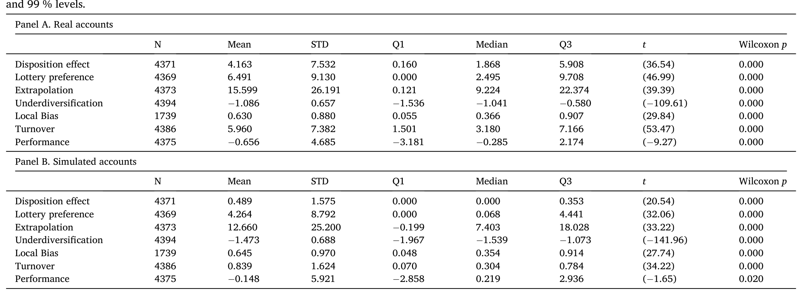
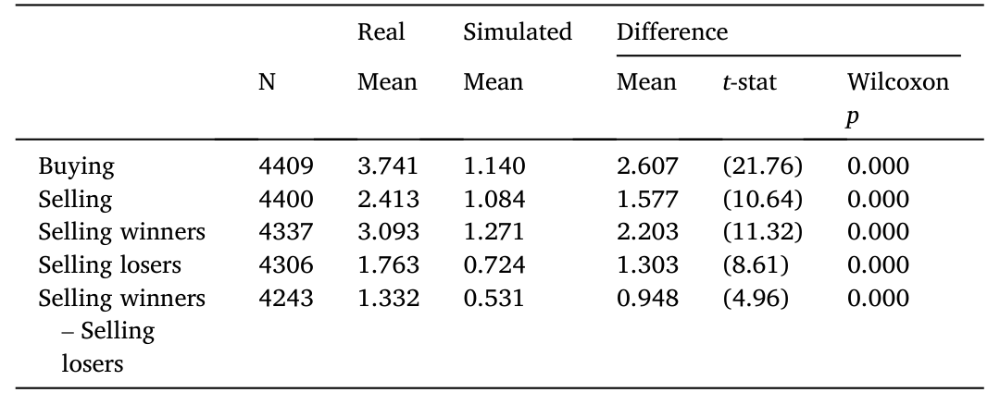
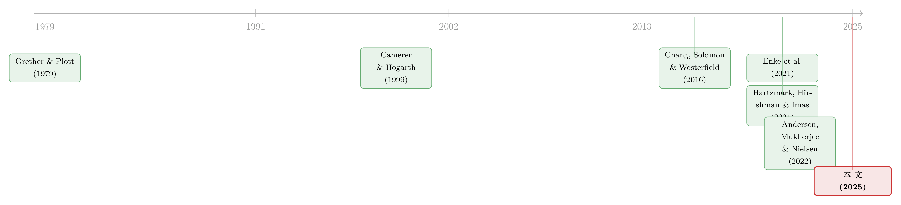

当真金白银上场，人反而更「上头」了
本文读的是 Sui & Wang (2025, Journal of Financial Economics)：同一个人，同时持有一个用真钱交易的实盘账户和一个不涉及真钱的模拟盘账户。作者发现——投资者在「赌注更大」的实盘里，行为偏差反而更强、业绩反而更差。一句话说穿：人在乎得越少，反而做得越好。
1 一个被默认了几十年的常识
先讲一个几乎所有经济学家都默认的「常识」。
人是会偷懒的。当一件事无关痛痒时，我们随手糊弄；当真金白银押上去、输赢攸关时，我们会打起精神、集中注意、反复掂量。于是顺理成章地，很多人相信：提高赌注（raise the stakes），会逼出更多的注意力与努力，让人从「拍脑袋的启发式」切换到「认真的深思熟虑」，从而把那些行为偏差（behavioral biases）抹平。
这套逻辑不只是直觉，它还撑起了整个实验经济学的合法性。批评者常说：实验室里给学生发的那点报酬，不过是几个小时的工资，赌注太小，所以实验里观察到的那些「偏差」未必是真的——只要把赌注提到现实世界的水平，人就清醒了，偏差就消失了。这就是那句被反复引用、却很少被真正检验的指控：实验室里的发现，是「真错误」，还是只是「缺少赌注（missing stakes）」？（Enke et al., 2021）
要回答这个问题，理想的实验是这样的：找同一个人，让他在「低赌注」和「高赌注」两种情形下做同一类决策，其余条件全都一样，然后比较。可现实中，赌注几乎从不单独变化——它总是和财富、经验、智商、金融素养这些东西纠缠在一起。于是几十年来，关于赌注效应的证据，绝大多数来自实验室（Camerer & Hogarth, 1999），而少数几个现实世界的研究，又几乎全是跨人比较，难逃遗漏变量之嫌。
接着，一个自然的问题是：能不能找到一个现实场景，让同一个人真的同时面对「有真钱」和「没真钱」两套决策？
2 雪球：一个近乎完美的天然实验
本文的巧妙之处，全在它找到的数据。
作者用的是中国一个叫雪球（Snowball）的投资者社交网络。雪球有一个关键特征：很多用户同时持有两类股票账户——一类是真实券商账户（real brokerage account），用自己的钱买卖；另一类是模拟账户（simulated account），不涉及一分钱真金白银。除了「不涉及真钱」这一条，模拟盘的几乎所有规则都和实盘一样：同样的行情、同样的交易时间、同样的买卖机制。
这就构成了一个近乎理想的组内估计（within-subject / within-investor estimation）：同一个投资者，同一段时间，在两套账户里交易同样的股票市场。两套账户唯一系统性的差别，就是赌注——实盘是真钱，模拟盘是「玩票」。作者保守估计，样本里实盘账户的平均市值，相当于中国人均年可支配收入的好几倍。这绝不是「小赌注」。
这正是这篇论文最值得玩味的地方：它用一个看似「不严肃」的模拟盘，制造出了实验经济学梦寐以求的「同一个人 × 两种赌注」的对照。批评实验室「赌注太小」的人，恰恰可以在这里被检验——因为这里真有一边是「零赌注」，另一边是「高赌注」。
样本是 4000 多名投资者、横跨三年。作者拿出金融文献里一整套最经典的行为偏差，逐一在两套账户里量、再两两相减。
3 反转：在乎得越多，错得越离谱
然后，反转出现了。
按照第 1 节那套「常识」，实盘赌注大、人更上心，偏差应该更小才对。可数据给出的，是一个几乎处处相反的结论。作者把投资者最常见的几种偏差挨个比了一遍：
- 处置效应（disposition effect）——急着卖掉赚钱的、死扛住亏钱的：实盘里更强；
- 彩票偏好（lottery preference）——偏爱低价、高波动、正偏度的「彩票型」股票：实盘里更强；
- 外推（extrapolation）——追买过去涨得猛的股票：实盘里更强；
- 分散不足（underdiversification）——把鸡蛋放进更少的篮子：实盘里更强；
- 过度交易（active trading）：实盘里更频繁。
唯一一个没有显著差别的，是本地偏好（local bias）——爱买离家近的公司的股票。

Table 4
给几个真实的量级，免得显得含糊。论外推：实盘里所买股票过去六个月的平均收益，比市场高出 15.60%，而模拟盘里只高出 12.66%——人在真钱账户里追得更凶。论分散：投资者在实盘里平均只持有 2.96 只股票，在模拟盘里却握着 4.36 只——真钱反而让人把篮子收得更窄。论业绩：买入后两个月，实盘所买股票相对同规模股票的平均收益要低 0.66%，模拟盘则只低 0.15%——也就是说，实盘的择股，亏得更多。
凭着样本量和组内估计的优势，这些差异不仅在统计上显著，在经济意义上也显著。即便是那个「没差别」的本地偏好，由于标准误极小，作者也能有底气地说：两类账户之间就算有差异，也小到可以忽略。
一句话：投资者在自己真正在乎的账户里，做得更糟。 这与那句几十年的常识，正好拧着来。
4 会不会只是模拟盘在「瞎玩」？
但真正关键的一步，是堵住一个最容易想到的反驳。
你大概马上会问：模拟盘不涉及真钱，会不会投资者根本就是随机乱点？如果模拟盘里的交易是噪声，那它当然显不出什么系统性偏差——所谓「实盘偏差更强」，不过是「模拟盘没偏差」的假象罢了。
作者给出了几组证据，逐一拆掉这个猜想。
首先，模拟盘里的偏差虽然整体弱于实盘，但它们本身就很强，绝不是一团噪声——模拟盘里的投资者，照样显著地追涨、照样偏爱彩票股、照样扛亏不止盈。
接着，更有说服力的一招：作者发现，同一个人在两类账户里的偏差，呈强正相关。在实盘里处置效应强的人，在模拟盘里处置效应也强；外推凶的人两边都凶。这种「行为一致性（behavioral consistency）」意味着，哪怕不押真钱，人的行为模式也是稳定、成系统的，而非随机。
这一步的含义，其实超出了「赌注」本身。它直接回应了开头那场争论：低赌注的实验方法，尽管不完美，却确实能告诉我们真实世界里人会怎么做。 实验室没有被「赌注太小」这条指控击垮——它测到的偏差，和真钱世界里的偏差是同一根藤上的瓜。
（关于「用实验室里量出来的一把尺子去丈量真实世界的买卖」，本博客此前评述过一篇异曲同工的研究，见《外推者与逆向者：一把在实验室里量出来的尺子，丈量真实世界的买卖》。）
一个诚实的隐忧：我们并不确切知道投资者为什么要维护一个模拟盘。它可能是「自选股清单（watch list）」，可能纯粹是图个乐子。作者的回应很巧：如果模拟盘是用来「探索、玩票、冒险」的，那它的风险应该高于实盘才对——可数据里恰恰相反，模拟盘风险更低。此外，单看那些明确声明「以业绩最大化为目的」的子样本，结论依旧成立。
5 那么，为什么是反的？两条机制
既然方向反了，「常识」错在哪？作者梳理出两条机制，都指向同一个判断：注意力的边际效应，在股市里可能是负的。
第一条机制，挑战的是常识的前提。 常识默认：更多注意力 → 更深思熟虑 → 从启发式切换到理性。但如果一个人脑子里装的本就是错误的心智模型（mental model）呢？那么提高赌注、投入更多注意力，只会让他更卖力地、更一丝不苟地套用那个错误的模型——错得更彻底（Dawes, 1979；Hartzmark, Hirshman, & Imas, 2021）。比方说，一个笃信「价格动量」的人，赌注一高，就会更用力地去搜寻那些过去涨得猛的股票，于是外推偏差不降反升。
第二条机制，则是赌注强化了「非传统偏好」——尤其是认知失调（cognitive dissonance）与自我形象（self-image）。承认实盘里的一笔失误，远比承认模拟盘里的失误更难堪、更伤自尊。于是为了回避「我错了」这个念头，人会死扛亏损不肯卖出——这恰好为「实盘处置效应更强」提供了一个干净的解释（Chang, Solomon, & Westerfield, 2016）。它甚至能解释其他偏差：当你特别想「做对、显得聪明、露一手」时，你会交易得更勤、会把筹码押在少数几只你自认有把握的股票上（所以分散更差），还会偏爱那些「一旦中了就特别提气」的彩票股。而本地偏好之所以没有差异，也说得通——买不买家门口的股票，本就和自我形象关系不大。
两条机制有一个微妙的分野：第一条说，赌注改变的是「信念/偏好 → 行为」的翻译过程，偏好本身没变；第二条说，赌注直接改变了偏好（让认知失调、自我形象这些非传统偏好变得更强）。本文不试图彻底分清两者，但给出了同时支持二者的旁证。
最妙的是，认知失调这条机制还能额外生出可检验的预测，而作者真去验了。
其一，Chang, Solomon, & Westerfield (2016) 早就发现：人在交易主动管理型基金时，表现出的是反向处置效应（reverse disposition effect）——因为亏了可以把锅甩给基金经理，自我形象不受损。那么按认知失调的逻辑，赌注越大，基金上的反向处置效应应该越强。作者在美国某券商数据里验证：组合权重越大的股票型基金，反向处置效应确实越强。
其二，在雪球数据里，作者发现：投资者在卖出时，更愿意「广播」自己卖掉了赢家，而不太愿意声张自己割了输家；而且这种「报喜不报忧」的差异，在实盘里比模拟盘里更明显——因为真钱交易，才真正关乎面子。
这两条都很难用别的机制解释，却都与「赌注强化认知失调与自我形象」严丝合缝。
6 走出雪球：把「赌注」装进组合权重
雪球的对照，是「真钱 vs 没钱」的两极。可现实中我们更想知道：在都涉及真钱、且赌注都不低的区间里，再往上加码，偏差是继续增强，还是会掉头？
为此作者动用了另外两套账户级数据——一套来自美国券商，一套来自中国券商。这一次，赌注的高低由组合权重（portfolio weight）来刻画：一只股票在你组合里占的比重越大，它对你的「赌注」就越高。
结论与雪球一脉相承：组合权重越大的股票，处置效应越强。 也就是说，即便都在「真钱、高赌注」的世界里，再提高赌注，偏差仍在增强，而非减弱。

Table 11: (4).29
当然，作者也老实承认：组合权重不是随机分配的，这一环的因果干净度不如雪球的组内对照。但作为外部效度（external validity）的旁证，它把「高赌注强化偏差」这条结论，从「真钱 vs 没钱」的极端对照，延伸到了「高赌注 vs 更高赌注」的连续区间。
此外，作者还利用了一个数据特征做了漂亮的「注意力」检验：样本里多数人并非同时开两类账户。作者推测，当一个人只持有实盘（或只持有模拟盘）时，他对该账户的注意力，会高于同时持有两类账户时。如果「注意力强化偏差」成立，那就该看到：只持有一类账户时，该账户里的偏差更强。数据确实如此。这等于在同一逻辑下，又加了一道独立的砝码。
7 文献脉络
把这篇论文放回它所在的那条河流里看，会更清楚它的位置。
最上游，是实验经济学里关于「激励能否消除偏差」的老争论。Grether & Plott (1979) 用偏好反转现象，奠定了「用真金白银去诱导信念与偏好」的方法论传统；Camerer & Hogarth (1999) 则对赌注效应做了经典综述，给出了那个被无数人引用的判断：赌注的效果，取决于任务的性质——有时改善表现，有时无关，有时甚至损害表现。
接着，是把这套追问搬进金融与心理学具体场景的一批工作。Chang, Solomon, & Westerfield (2016) 用认知失调，同时解释了股票上的处置效应与基金上的反向处置效应，成了本文机制部分最重要的支柱。Hartzmark, Hirshman, & Imas (2021) 则揭示了「拥有、学习与信念」之间的扭曲——为「错误心智模型 + 更多注意力 = 错得更狠」提供了微观证据。

然后，是直面那句指控的两篇。Enke et al. (2021) 在实验室里系统检验了「认知偏差究竟是真错误，还是缺少赌注」，发现不同任务上结论各异。而在现实世界里，据作者所知，唯一另一篇用因果方法研究赌注效应的田野研究，是 Andersen, Mukherjee, & Nielsen (2022) 的《Stakes and Mistakes》——他们利用父母骤逝带来的意外遗产作为赌注的外生变化，却发现效应在经济意义上很小，且多数偏差的下降是「被动」的（比如继承来的资产恰好稀释了分散不足），还难以把赌注效应与财富效应分开。
本文恰好补上了这条河流里缺的那一段：第一次在真实金融投资任务上，记录到赌注对偏差的「负向」效应；并且用「同一个人 × 两套账户」的组内设计，干净地绕开了跨人比较里那些遗漏变量，也绕开了「学生样本不代表真实人群」的老批评。
8 评论与延伸（Q&A + 研究方向）
(a) 几个可能的疑问
Q：模拟盘和实盘的差别，真的只是「赌注」吗？会不会人就是把模拟盘当游戏？
这是最致命的质疑，作者也最当回事。三条反驳：其一，若当游戏玩，应在模拟盘里冒更大的险，但数据相反；其二，结论横跨多种对应不同理论的偏差，齐刷刷指向「赌注」这一个共同因，比「各有各的杂因」更可信；其三，单看明确声明「以业绩最大化为目的」的子样本，结论依旧。无法 100% 排除，但替代解释的可信度被大大削弱了。
Q：「实盘偏差更强」会不会只是因为模拟盘在瞎点（噪声）？
不是。模拟盘里的偏差本身就很强，且同一个人两类账户的偏差呈强正相关。噪声不会和实盘行为系统性地同向相关。这条「行为一致性」正是论文的另一块基石。
Q：这是不是说实验室那套「小赌注」实验根本没问题？
不能这么强。准确的说法是：低赌注实验对真实行为是有信息量的（两类账户偏差强相关），但它会系统性地低估真实世界里偏差的强度（实盘普遍更强）。所以实验室不是「白做」，而是「方向对、幅度偏小」。
Q：处置效应在实盘里更强，和「认知失调」之外的解释（比如理性的税收动机）冲突吗？
在这个设定里反而更干净。模拟盘没有真实税负、真实交易成本，可它照样有处置效应；而实盘里更强的那部分，很难用税收或交易成本讲圆，却与「认知失调/自我形象」高度吻合——尤其是「报喜不报忧」式的选择性广播这条独立证据。
Q：组合权重那部分（第 6 节）的因果说服力够吗？
作者自己承认不够——组合权重是内生选择的结果，不是随机分配。它的作用是外部效度的旁证，把结论从「真钱 vs 没钱」延伸到「高赌注 vs 更高赌注」，而不是独立的因果识别。读者应把雪球的组内对照当主菜，把券商数据当配菜。
Q：样本是中国散户、还是社交网络上的活跃用户，能推广到一般投资者吗？
这是非随机样本，作者并不讳言。但他们的辩护是：研究「自我选择进入高赌注决策」的人群，本身就有现实意义；而且券商数据里的美国样本给出了同向结论，缓解了「纯中国现象」的担忧。外推到机构投资者则要谨慎——机构的自我形象机制与散户大不相同。
(b) 几个可能的研究问题与提案
1. 把「赌注 → 偏差」搬到公司债/信用市场。 【经济故事】散户在公司债上的参与度低、但近年通过债券型基金大量间接持有；当一只债基在某投资者组合中权重很高（赌注大）时，是否也会出现更强的处置效应或反向处置效应？信用市场的「割肉」往往关乎承认信用判断失误，认知失调机制可能更强。 【可行性】中。需要券商或基金平台的账户级持仓与交易数据；识别上可借用本文的「组合权重」思路，但同样受内生权重困扰，最好叠加一个外生的权重冲击（如指数再平衡导致的被动权重变动）。
2. 外资持有人的「赌注异质性」。 【经济故事】同一只新兴市场债券/股票，对本地散户是「身家」，对全球大型资管只是组合里的一个小格子——赌注天差地别。本文预测赌注大者偏差强，那么外资是否因「赌注更小、更超脱」而表现出更弱的处置效应、更理性的止损？这能为「外资是否更聪明的钱」提供一个行为微观基础。 【可行性】中。需要按持有人类型拆分的交易数据（如 TRACE 配合监管持仓，或新兴市场的外资持仓登记）；识别难点在于把「赌注小」与「信息优势、专业度」分开——可用同一机构在不同权重头寸上的处置效应差异来做组内比较。
3. 赌注与流动性提供：真钱让人更不愿做逆向交易吗？ 【经济故事】若高赌注强化处置效应（扛亏不卖），那在市场下跌时，高赌注头寸的持有人会更不愿割肉、也更不愿在底部加仓，等于撤回了流动性。这把一个行为偏差与市场层面的流动性枯竭联系起来。 【可行性】中偏低。需要把账户级持仓权重与个股层面的流动性指标匹配，并在抛售压力事件中观察「高权重持有人」的成交方向；难在分离行为动机与机械性的保证金/赎回约束。
4. 「报喜不报忧」的社交广播，如何反过来污染市场信念？ 【经济故事】本文发现投资者更爱广播自己卖出赢家。若社交网络上系统性地「只晒赚的、不提亏的」，会让旁观者高估散户的真实业绩，助长追涨与外推。这是把个体偏差经由社交传播放大为市场情绪的一条链路（呼应 Han, Hirshleifer, & Walden, 2022 的社交传播偏差）。 【可行性】高。雪球这类平台本就有公开发帖数据，可把「发帖披露」与「后台真实交易」对齐，度量披露的选择性，再看它对关注者后续交易的影响。
5. 当「赌注」可被外生改变：用一次政策或制度冲击做更干净的识别。 【经济故事】本文的组内对照很强，但「真钱 vs 没钱」是离散两极。若能找到一次让真实头寸赌注外生变动的事件（如印花税调整、杠杆比例变化、或一笔与组合弱相关的意外现金注入），就能估计赌注效应在「连续区间」上的斜率，补上 Andersen et al. (2022) 与本文之间的空白。 【可行性】中。需要事件前后的账户级面板；难点是找到一个既外生、又不同时改变财富与信息的冲击——意外遗产是个起点，但本文已指出其财富效应难以剥离。
9 我的判断
先说贡献。这篇论文最漂亮的，不是某个系数，而是它的设定——「同一个人 × 真钱账户 + 模拟账户」这个组内对照，几乎是为「赌注效应」量身定做的。它一举绕开了过去文献两大软肋：跨人比较的遗漏变量，和「学生不代表真人」的外推质疑。在此之上，它给出了一个真正反直觉、且统计上极扎实的结论：赌注越大，偏差越强，业绩越差。更难得的是，「两类账户偏差强正相关」这一发现，顺手为整个实验经济学正了名——低赌注实验是有信息量的，只是会低估幅度。
再说担忧。最大的开放问题，仍是「人为什么开模拟盘」这件事无法被随机化。作者用了一连串旁证（风险方向、声明目的、开户先后顺序）来堵，堵得相当用力，但终究是「排除替代解释」，而非「正面识别」。其次，两条机制——「错误心智模型 + 注意力」与「认知失调 + 自我形象」——本文并未真正分开，它们对很多偏差给出的预测是重叠的；要把它们掰开，恐怕得另设实验。第三，第 6 节的组合权重证据，因权重内生，说服力明显弱于雪球主体，读者不宜把它当独立因果。
最后，我想看到什么。我最想看的，是赌注效应的「剂量—反应曲线」：从零赌注（模拟盘）到低、到中、到高，偏差究竟是单调上升，还是在某处掉头？本文给了两个端点（真钱 vs 没钱）和一段内生的斜率（组合权重），中间的形状仍是空白。谁能找到一个让真实赌注外生连续变动的场景，谁就能把这条曲线画出来——那将是对「赌注与人性」这个老问题，最完整的一次回答。
参考文献
- Andersen, S., Mukherjee, A., & Nielsen, K. M. (2022). Stakes and Mistakes. Working Paper.
- Andersen, S., & Nielsen, K. M. (2011). Participation constraints in the stock market: evidence from unexpected inheritance due to sudden death. Review of Financial Studies 24, 1667–1697.
- Barber, B. M., & Odean, T. (2008). All that glitters: the effect of attention and news on the buying behavior of individual and institutional investors. Review of Financial Studies 21, 785–818.
- Barber, B. M., & Odean, T. (2013). The behavior of individual investors. In Handbook of the Economics of Finance 2, 1533–1570. Elsevier.
- Barberis, N., & Thaler, R. (2003). A survey of behavioral finance. In Handbook of the Economics of Finance 1, 1053–1128. Elsevier.
- Camerer, C. F., & Hogarth, R. M. (1999). The effects of financial incentives in experiments: a review and capital-labor-production framework. Journal of Risk and Uncertainty 19, 7–42.
- Chang, T. Y., Solomon, D. H., & Westerfield, M. M. (2016). Looking for someone to blame: delegation, cognitive dissonance, and the disposition effect. Journal of Finance 71, 267–302.
- Chetty, R., Friedman, J. N., Leth-Petersen, S., Nielsen, T. H., & Olsen, T. (2014). Active vs. passive decisions and crowd-out in retirement savings accounts: evidence from Denmark. Quarterly Journal of Economics 129, 1141–1219.
- Dawes, R. M. (1979). The robust beauty of improper linear models in decision making. American Psychologist 34, 571–582.
- Enke, B., Gneezy, U., Hall, B., Martin, D., Nelidov, V., Offerman, T., & van de Ven, J. (2021). Cognitive biases: mistakes or missing stakes? Review of Economics and Statistics (forthcoming).
- Gathergood, J., Mahoney, N., Stewart, N., & Weber, J. (2019). How do individuals repay their debt? The balance-matching heuristic. American Economic Review 109, 844–875.
- Grether, D. M., & Plott, C. R. (1979). Economic theory of choice and the preference reversal phenomenon. American Economic Review 69, 623–638.
- Han, B., Hirshleifer, D., & Walden, J. (2022). Social transmission bias and investor behavior. Journal of Financial and Quantitative Analysis 57, 390–412.
- Hartzmark, S. M., Hirshman, S. D., & Imas, A. (2021). Ownership, learning, and beliefs. Quarterly Journal of Economics 136, 1665–1717.
- Heimer, R. Z. (2016). Peer pressure: social interaction and the disposition effect. Review of Financial Studies 29, 3177–3209.